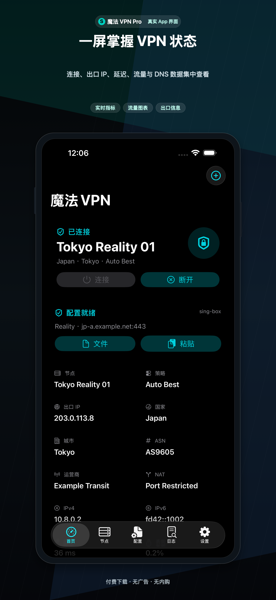
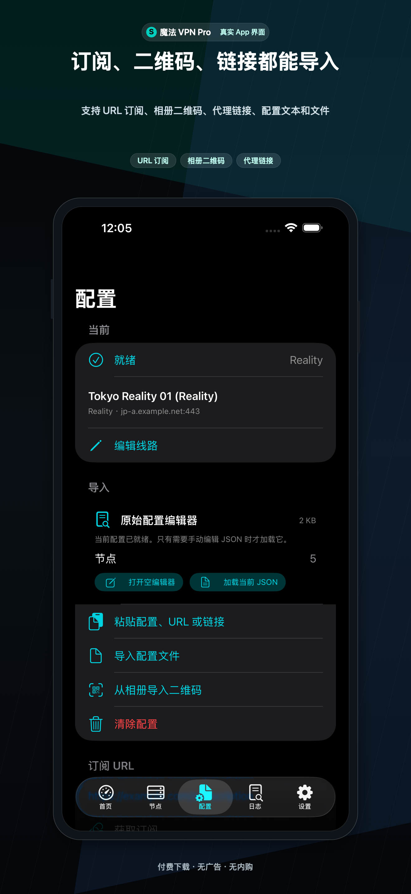
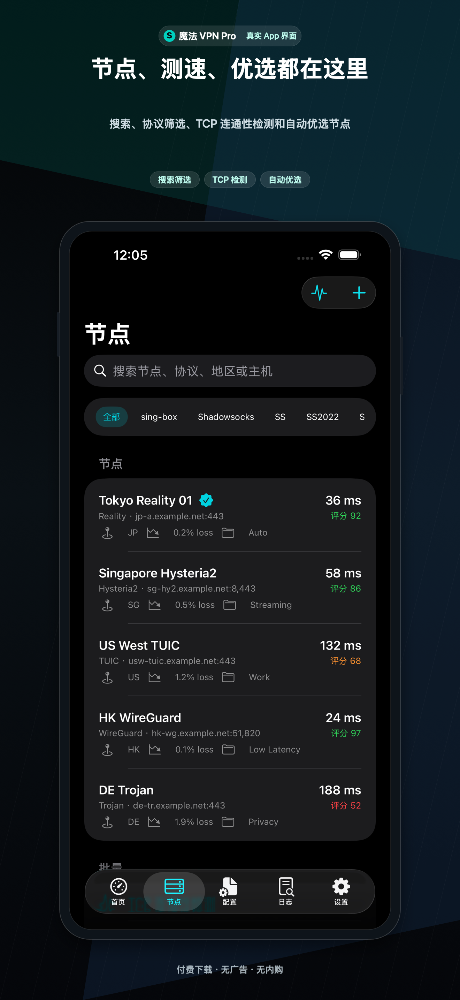
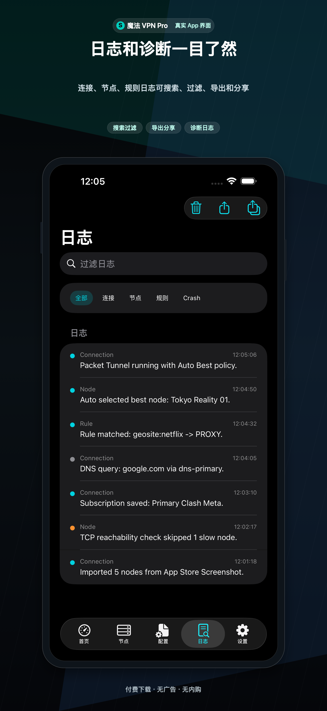
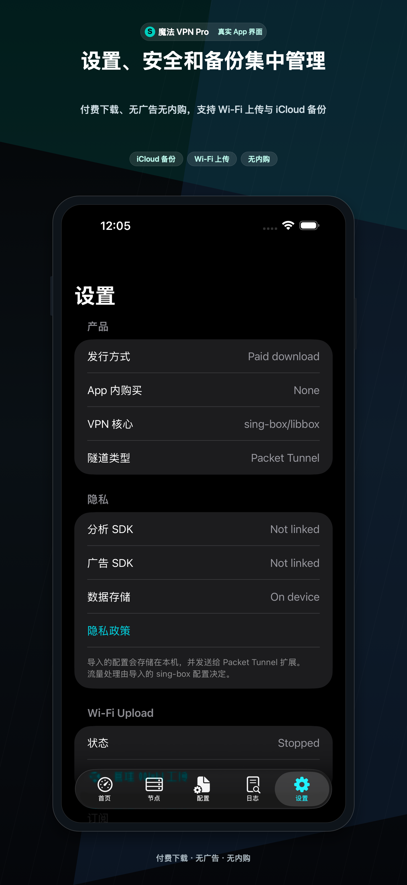

1
开始前准备
- 准备来自你自己服务提供方的 sing-box JSON、Clash/Mihomo YAML、订阅 URL、代理 URI、二维码、剪贴板文本、本地文件或 Wi-Fi 上传文件。
- 如果要使用完整 VPN 配置，请确认导入的 sing-box 配置包含
tun入站和至少一个可用的代理 outbound。也可以先导入节点链接，再将节点转换为当前运行配置。 - 导入前先确认服务器或订阅端点在当前网络下可访问。对于无效的服务商配置，SpellVPN 不会创建账号、服务器、凭据或可用流量。
- SpellVPN 是客户端，不销售代理节点，也不运营开发者托管的 VPN 流量网络。请只使用你获准使用的配置。

2
导入配置
- 打开 SpellVPN，停留在首页，点击右上角的 +。根据来源选择扫码、照片二维码、剪贴板、文件、Wi-Fi 上传、订阅 URL、代理链接、系统分享或 URL Scheme。
- 导入订阅时粘贴完整 URL，等待下载和解析结果。导入单节点时粘贴当前送审版本支持的代理 URI，例如
ss://、vmess://、vless://、trojan://、hysteria2://、hy2://、tuic://、socks://、socks5://、http://或https://代理链接。 - 保存前检查识别出的配置名称、协议、服务器、端口、传输方式、TLS 和规则信息。列表中显示节点名称不代表远端服务器一定可用。
- 如果导入失败，请检查订阅 URL 是否过期或被阻断、JSON/YAML 是否格式错误、Base64 是否混入额外字符、字段是否不支持，或服务器与端口是否缺失。打开 Logs 查看具体解析错误。
- 对于 OpenVPN
.ovpn和 IKEv2.mobileconfig，App 会给出明确限制提示，因为当前版本没有包含对应的原生配置核心。

3
管理订阅和节点
- 成功导入订阅后，打开 设置 → 网络与配置 → 管理订阅。每个 URL 都有自己的分组，更新一个分组不会覆盖其他分组。
- 打开分组后可以更新 URL、复制 URL、重命名分组或删除分组。等待结果提示，并检查导入或跳过了多少节点。
- 打开 Nodes，可以按名称搜索、按协议筛选、展开分组、选择当前节点、编辑支持的 outbound 字段、收藏节点、导出单节点 JSON，或显示节点二维码。
- 连接前使用 Config 检查当前 JSON，以及支持的路由、DNS、TUN、IPv6、MTU、包含路由和排除路由设置。
- 导出的节点链接可能包含服务器地址、端口和凭据，只应分享给你信任的人或 App。不要把不属于你的配置、订阅或凭据公开传播。

4
连接与断开
- 选择有效的配置和节点，返回 首页，点击 连接。
- 首次安装 Packet Tunnel 配置时，在 iOS VPN 权限弹窗中确认允许。设备状态栏中的 VPN 标识由 iOS 控制。
- 当 App 和 iOS 都显示“已连接”后，打开真实网站测试，或使用网络工具里的 HTTP、TCP、DNS 和 IP 检查。系统显示已连接只能证明隧道配置启动，不代表所选远程节点一定可用。
- 打开 设置 → 网络与配置 → 管理 DNS，检查 DNS 模式、bootstrap 解析器、hosts、Fake-IP 和 IPv6 选项。切换节点前先确认当前路由模式。
- 需要断开时使用同一个控制。连接仍处于 Connecting 时不要连续点击连接，等待结果或打开 Logs。
5
诊断和网络工具
- 如果 VPN 显示已连接，但 Google、YouTube 或其他网站打不开，先检查当前节点、路由模式、DNS 设置、TLS/传输字段、服务器端口和节点协议测试。一次只调整一个因素，先尝试其他节点。
- 使用 App 当前版本提供的网络工具检查端点，包括 TCP Ping、DNS 查询、IP 查询、Whois、GeoIP、TLS 测试、HTTP 测试、TCP 端口检测、UDP 发送、IPv6 可见性检查和测速。
- 在导入、Ping 或连接后打开 Logs，按分类和时间筛选；然后使用 Export Diagnostics Report 导出文本报告提供给支持人员。
- 节点列表中的空白或
0 ms表示端点尚未测量、测量失败，或需要活动中的 UDP/QUIC 协议测试，不代表延迟为零。App Store 构建使用 TCP 可达性检查，而不是原始 ICMP 套接字。 - 当前 App Store 构建不展示 Traceroute、WebRTC 泄漏测试、MITM、Rewrite 脚本、原生 OpenVPN 或原生 WireGuardKit。

6
备份、数据和版本
- 打开 设置 → 数据与同步 → 导出 App 数据文件 创建 JSON 备份；如果签名后的 App ID 具备 iCloud Documents capability，也可以使用 iCloud Drive 备份。备份可包含配置、节点、订阅、规则、DNS、路由模式、适配器设置和统计数据。
- 日志会保存在设备本地，除非你主动导出或分享。清除本地数据不会删除 iCloud Drive 备份文件；iOS VPN 权限和当前系统隧道也不会包含在可移植备份中。
- 在 Ultra 中打开 设置 → 订阅 → Ultra Subscription，查看 StoreKit 价格、购买、恢复或管理订阅。四个方案分别是周、月、季和年订阅，由 Apple 管理。
- SpellVPN Pro 为付费下载，无广告、无 App 内购买。SpellVPN Ultra 免费使用并展示广告；可选 App Store 订阅可去广告并保持 Ultra 权益。

如需帮助，请联系 balamanigill@gmail.com.
Pro 为付费下载，无广告、无 App 内购买。Ultra 免费版接入 Yandex/AdMob 广告，并提供可选自动续期订阅。